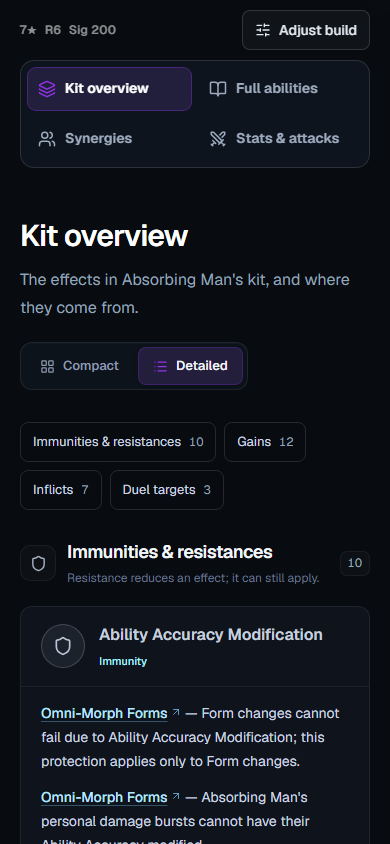
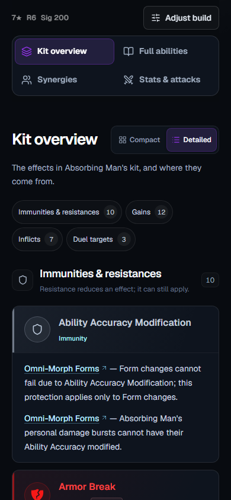
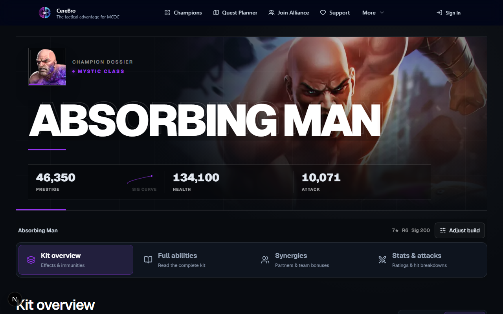
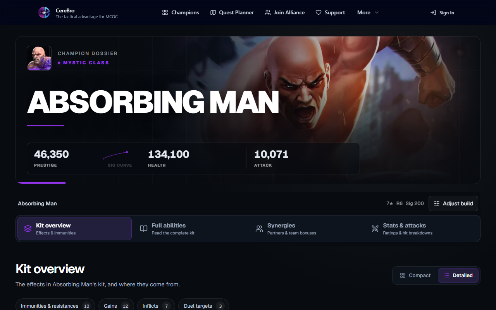
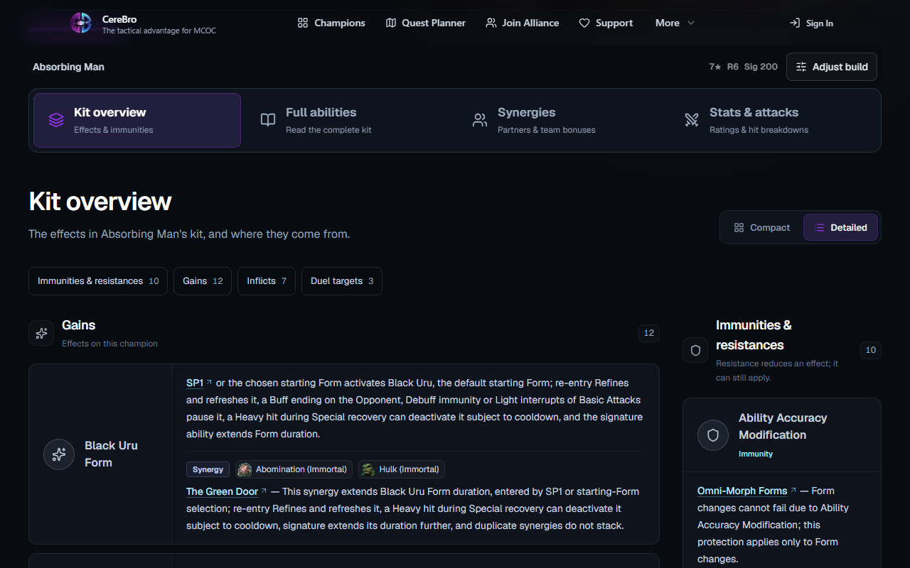
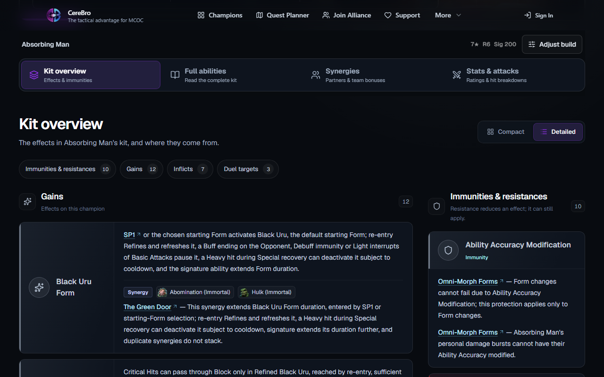
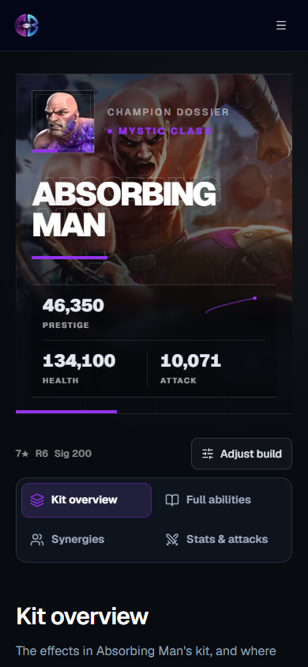
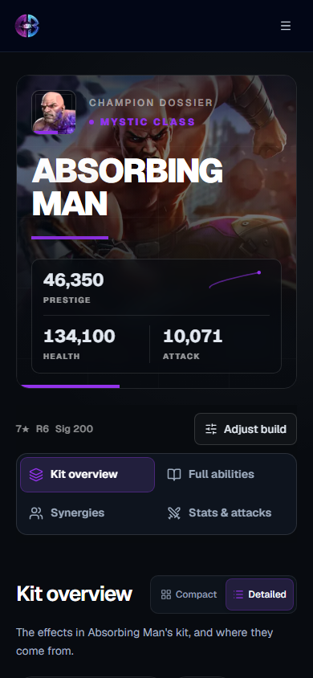
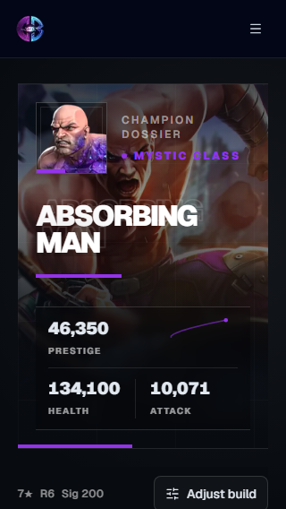
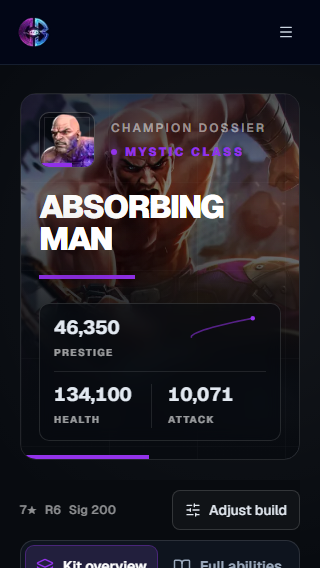
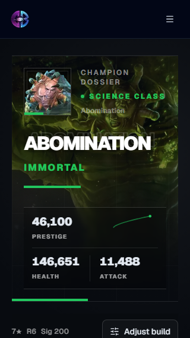
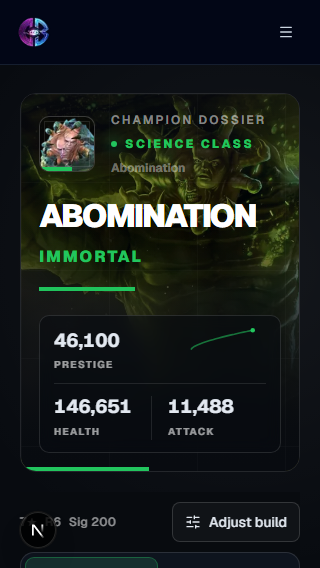
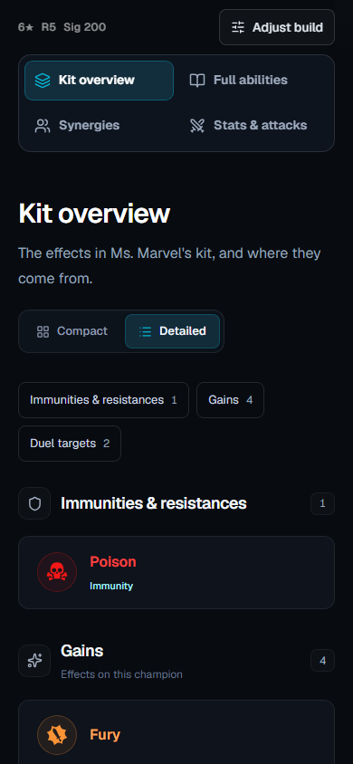
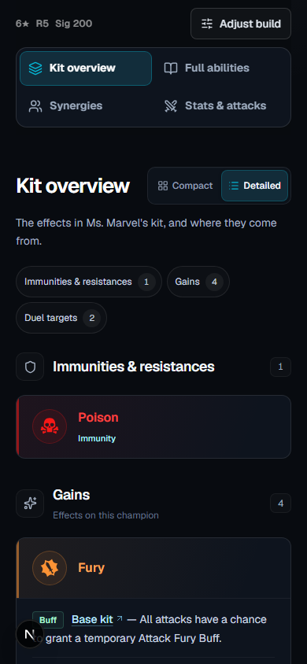
Real screenshots from the same local Chromium setup, signed out, DPR 1. Viewport sizes and champion builds match. Overview pairs align the reading location. Use Before only / After only to inspect desktop screenshots at full width.